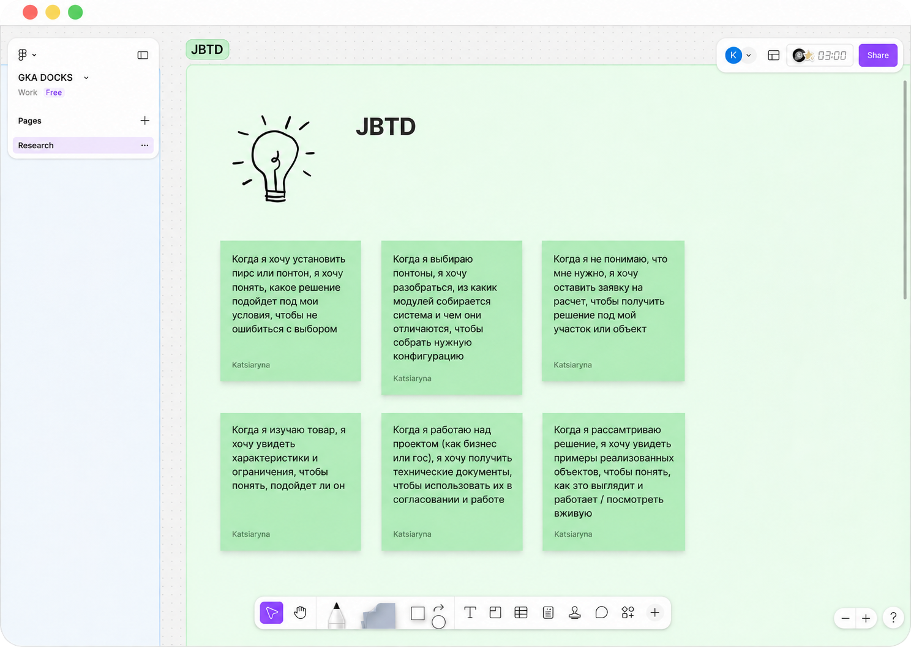
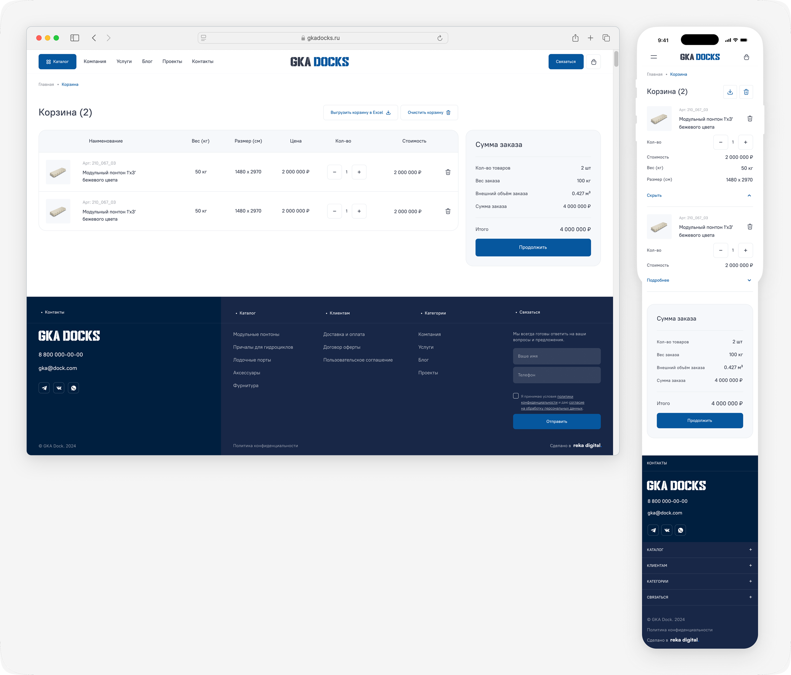
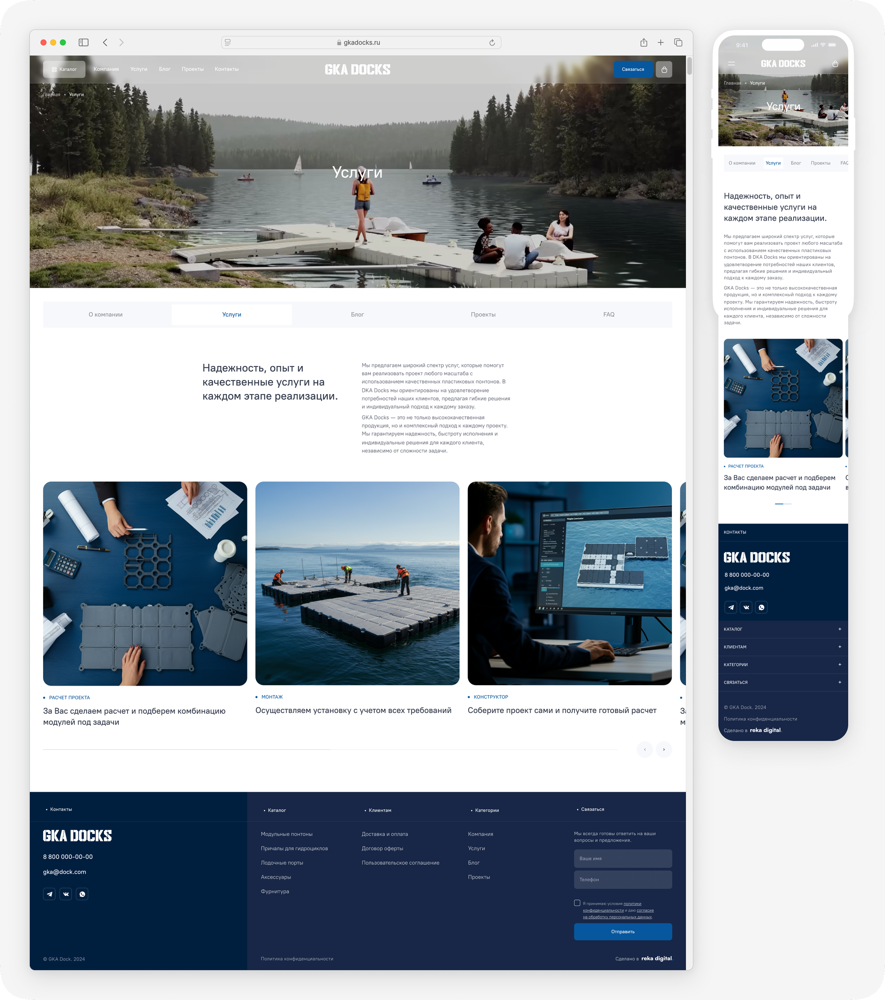
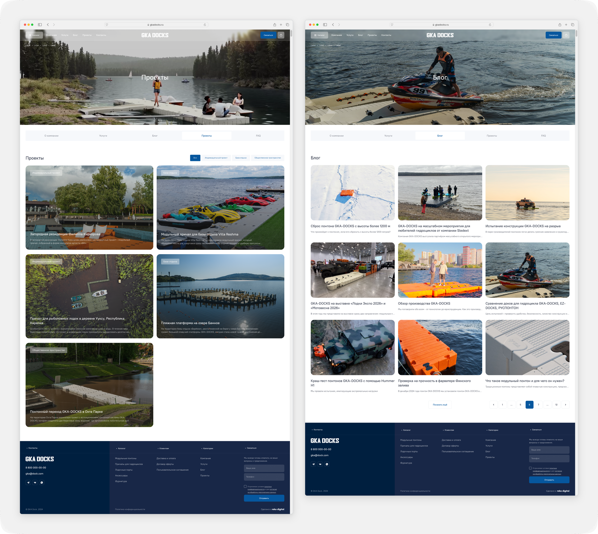

GKA-DOKS: спроектировала сайт для производителя модульных понтонных систем
GKA DOCKS — российский производитель модульных пластиковых понтонов и плавучих решений. Работает по всей России, делает не просто отдельные модули, а полные системы: от готовых причалов и доков для гидроциклов до инфраструктуры для частных участков, марин, курортов и публичных пространств
Цель бизнеса
Сначала разобралась в продукте и логике выбора
Начала с кикоффа с заказчиком: изучила продуктовую линейку, характеристики и параметры, которые менеджеры учитывают при подборе решения
Затем провела анализ конкурентов, сегментировала аудиторию на B2C, B2B и B2G и сформулировала JTBD и гипотезы
Исследование показало два основных сценария: пользователь либо понимает, что ему нужно, и может выбрать товар сам, либо приходит с задачей и ему нужен расчёт проекта

Из исследования собрала структуру сайта в Miro
На основе пользовательских сценариев собрала структуру сайта и вынесла два основных пути на верхний уровень:
Отдельно заложила разделы для услуг, проектов, технических материалов и B2B/B2G-сценариев
Структуру несколько раз уточняла по мере обсуждений с заказчиком и проработки продуктовой логики
Проверила логику на lo-fi прототипах
После структуры собрала lo-fi прототипы основных сценариев: каталог, карточку товара, проекты и расчёт проекта. Проверила, как пользователи ориентируются в структуре, находят нужные товары и понимают, куда идти дальше. По результатам доработала каталог, карточку товара и сценарий расчёта проекта
Затем перешла к визуальной концепции
Подготовила несколько дизайн-концепций с разным подходом к структуре и подаче информации. Основной задачей было сохранить большое количество технических данных, но не перегрузить интерфейс. В итоге выбрали направление с чистой структурой, большим количеством воздуха и акцентом на каталог и продукт
Как я решала задачи бизнеса
Два сценария стали основой всего сайта
Клиенты приходят с разным уровнем погружения: кто-то точно знает, что ему нужно, а кто-то не может сам собрать решение и обращается к менеджеру за консультацией. Также было видно по конкурентам: там, где есть конфигураторы, они настолько сложные, что без помощи специалиста ими не воспользоваться
Гипотеза
Решение
Каталог упростила для пользователей без технической подготовки
В каталоге оставила только данные для первичного выбора. В карточке товара — ключевые характеристики и действия. Более подробную техническую информацию, чертежи и документацию вынесла глубже
Гипотеза
Решение
Для B2B и B2G добавила рабочие инструменты
Предусмотрела техническую документацию, проекты, услуги и возможность выгрузить заказ в Excel для дальнейших расчётов и согласований
Гипотеза
Решение
Добавила возможность выгрузки корзины в Excel, чтобы B2B-клиенты могли использовать состав заказа при подготовке коммерческих предложений, согласовании бюджета и внутренних расчетах

Спроектировала раздел «Услуги», подробно описав спектр услуг: расчет проекта, поставки и монтажа, чтобы показать компанию как подрядчика полного цикла

Разработала раздел «Проекты» с фильтрацией, а также раздел «Блог», который помогает разобраться в продукте и его применении до обращения в компанию

Результат
Сайт уже стал источником заявок. По обратной связи заказчика, пользователи лучше ориентируются в продукте и приходят к менеджерам более подготовленными, поэтому базовых вопросов на старте стало меньше. При этом количественных данных пока недостаточно, а сценарий «Рассчитать проект» реализован не полностью